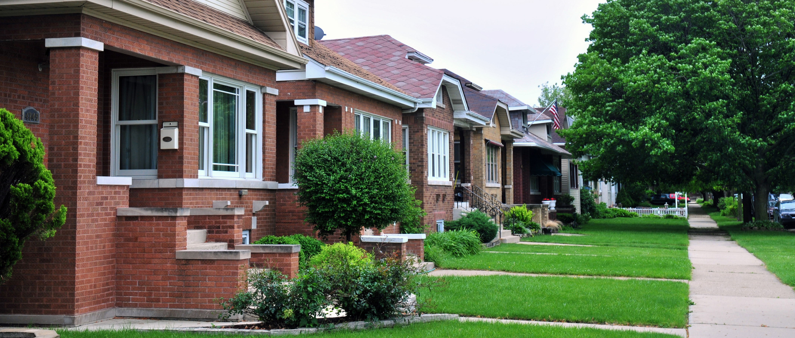

Click to play "Our Bungalow of Dreams" by Bix Beiderbecke in 1927
Walking into Frank Suerth’s ivy-clad bungalow in the 5200 block of West Giddings Street in Jefferson Park is like traveling back in time to circa 1914, the year the home was built.
Coats hang on a coat tree in a corner just behind the front entrance since few early bungalows had a closet at the entrance. A brown trunk sits on the floor a few inches away with various designs carved out of the wood.
Take a couple of steps to the left and you enter the living room. Three wooden chairs and a recliner are carefully positioned around a coffee table fanned out with books and magazines, with some about restoring – you guessed it - the American bungalows.
Beyond the table, Suerth’s acoustic guitar sits upright in front of a brick fireplace, painted white with wooden cabinets and stained glass doors on either side. Windows above the fireplace feature more stained glass and center a vintage photo of Susanna Suerth’s family.
Plenty of light fills the room from the multiple front windows and splashes across the dark woodwork.
Frank Suerth grew up in a bungalow, like the one he lives in now. "I like the brick, I like the quality of the structure," he said. "They seem to be strong in shape."
Suerth, 64, is a fourth-generation Chicago-area bungalow owner, a tradition that started with his great-grandmother. He has lived in this bungalow for more than 30 years and even grew up in one in Elmwood Park.
“All the bungalows there look very much alike,” said Suerth, who is also a board member on the Northwest Chicago Historical Society. “I had to count the number of houses from the corner to make sure I went into the correct house.”
He particularly likes the durability of these homes, but his favorite bungalow memory from childhood involves the building’s only bathroom, another typical feature for early bungalows.
“Growing up as a kid, it was my sister that took most of the time in the bathroom,” he said. “And I raised four kids here with one bathroom, and I would have bathroom schedules so they could take turns.”
The bungalow celebrated its centennial as an iconic Chicago housing structure in 2013. Although many are more than a century old, approximately 80,000 bungalows still house families in Chicago alone, and they make up about one-third of the city’s single-family housing supply.
Most recently, the Historic Chicago Bungalow Association teamed up with the Vernacular Architecture Forum to plan bungalow tours in the Rogers Park and South Shore neighborhoods during the forum’s annual conference from June 3 to 7.
Chicago bungalows typically possess 1.5 stories (including a storage attic), brick construction, several windows, a rectangular shape, a low-pitched roof with overhangs, a side or offset front entrance, among others. But the brick structure and shape are partly what separate them from the California bungalow. The squared-off and wooden West Coast structures more closely resemble the originals in Bengal, India. Even the name bungalow comes from an Indian Hindustani term “bangala.”
“They’re very well-made, which is why they’ve lasted this long,” said Jennifer Masengarb, director of interpretation and research at the Chicago Architecture Foundation.
The criteria for Chicago bungalows (Historic Chicago Bungalow Association)
Bungalows are located in a relatively narrow arc across the city, called the Bungalow Belt, and Masengarb said it curves about four or seven miles from downtown. The belt comprises neighborhoods such as Jefferson Park, Portage Park, Belmont Cragin, Chicago Lawn and Auburn Gresham.
As for that single bathroom, Masengarb said bungalows had a rather tight floor plan. If the blueprint divided the house lengthwise, one half would contain the kitchen, dining room and half of the living room while the other would show the living room's other half, two bedrooms and a bathroom in the middle. Many had a porch. The upstairs attic could be converted to a bedroom or storage space, with many owners adding dormers. Full basements were reserved for the furnace, storage and enough laundry space for clotheslines used in winter.
Back in the 1920s and even into the 1940s, Masengarb said bungalow prices ranged from $5,000 to $8,000. The houses attracted lots of first-generation immigrants who had the means to move out of densely populated ethnic neighborhoods and housing with fewer amenities. Vegetable and flower gardens, often with fruit trees, lined the lawns of the backyards.
Now, Frank Montro, a broker with Oak Realty, said the median bungalow price on the South Side might average about $200,000, while prices on the North Side could reach double or triple that amount. He also said there has been a recent resurgence in the bungalow’s popularity due to the space that it offers.
“With today’s standards and with the size of the families, people are starting to expand out the attics and basements into living areas,” Montro said. “And so now, when you compare that to a ranch or a Georgian or a Cape Cod, the bungalows become extremely popular because of the amount of space that it has there already.”
Gillian Wiescher, deputy director of the Historic Chicago Bungalow Association, said some common alterations owners make to their bungalows include attic insulation, air sealing, upgrading furnaces, pipe insulation and low-flow shower heads.
“They’re drafty old homes, and people consider them sometimes energy hogs,” Wiescher said.
But once fixed, she said bungalows could become just as or more efficient than new homes by reusing historic resources.
Any week now, renovations will start at Suerth’s bungalow to remove the enclosed porch, expand it about eight feet and add an extra basement for a wine cellar.
But despite such improvements, Suerth said he and his wife are still interested in bringing the original look back to the Giddings Street bungalow.
“To me, what’s fascinating is the way that the bungalow hasn’t changed in Chicago,” Masengarb said.
Previously, Suerth upgraded their bathroom to its original condition. He said they duplicated the one-inch hex tiles with a daisy ring blue pattern and replaced the vanity with a pedestal sink, which would have been common in early bungalow bathrooms.
“There’s a funny sort of pride that comes with owning a bungalow,” Wiescher said.
Because the bungalow is rich in Chicago history and tied to memories of home, Masengarb said this could contribute to such attitudes toward the structure.
That pride comes through Gail Weber’s voice as she walks us through her red-brick bungalow in the 4700 block of North Laramie Avenue in Jefferson Park.
“We love this place,” she said of her and her husband Carl. “We absolutely love this place.”
Weber’s grandfather built the spacious bungalow about 100 years ago, and she spent much of her childhood there after school and on holidays. When her parents began experiencing health issues, she moved into the bungalow in 1990 and has been there since.
Aspects of Weber’s home have a similar feel to Suerth’s bungalow: a fireplace, coat tree, stained glass windows and plenty of wooden furniture. She said she particularly enjoys the mahogany, built-in shelves, high ceilings and layout.
Gail Weber, 60, gives a tour of her library, which was built by a friend and adds unusual flair to her century-old bungalow. "Newer homes have absolutely no appeal to me," she said.
Weber turned her attic into a master bedroom and added a library when an addition was put on the building. She upgraded the electricity two different times. But aside from that, Weber, 60, treasurer the Northwest Chicago Historical Society, said not much else has been done. The first-floor bathroom still contains its original tiling and pedestal sink. An original flour bin with an attached sifter sits inside one of the kitchen cupboards.
Much of her grandparents’ furniture is also still on display, such as the couch and chairs in the den and the bedroom set in the guest room.
“I have a picture of my mother at about a year-and-a-half old laying on that wicker swing,” she said pointing to the enclosed sun porch, which was adorned with sheer, red drapery. “And my mom was born in 1920, so that goes way back.
She said she kept the furniture in part to preserve the home’s original look and make use of better-made furnishings. So, they have simply added their belongings to what was already there.
“It’s a rather eclectic mix of stuff,” Weber said.
With 100 years already secured, Montro does not see the bungalow going away any time soon.
“It gets better like fine wine because people are just taking it, utilizing it to meet their needs, and they’re not tearing down,” he said.
As much as Weber would like to see her bungalow stay within the family for future generations, she and Carl are uncertain whether this will happen. They do not think other family members will be as interested in the bungalow. But Weber plans to hang on to it as long as she possibly can.
“I’ve said it all along,” Weber said. “When my time comes, you’re going to carry me out of here in a box. Hopefully, not any time soon.”